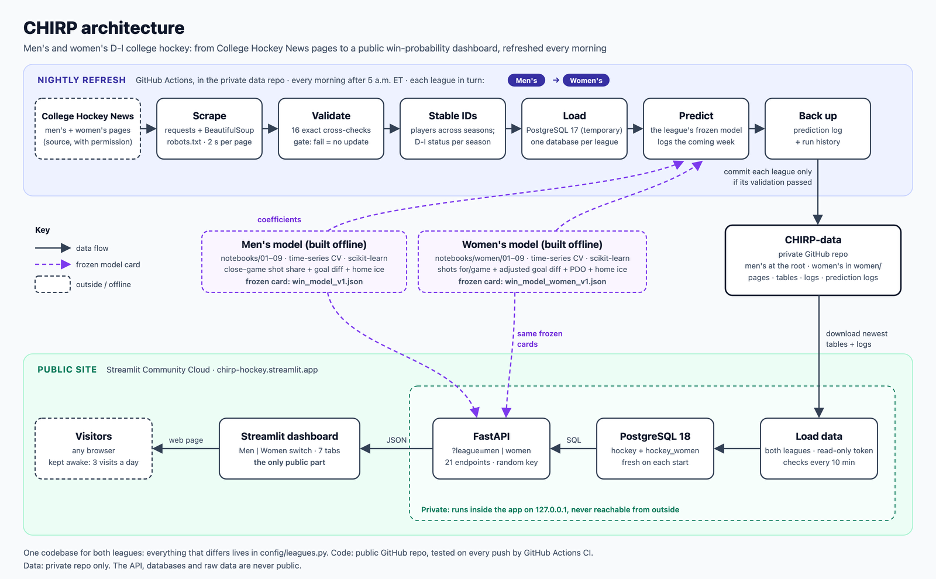
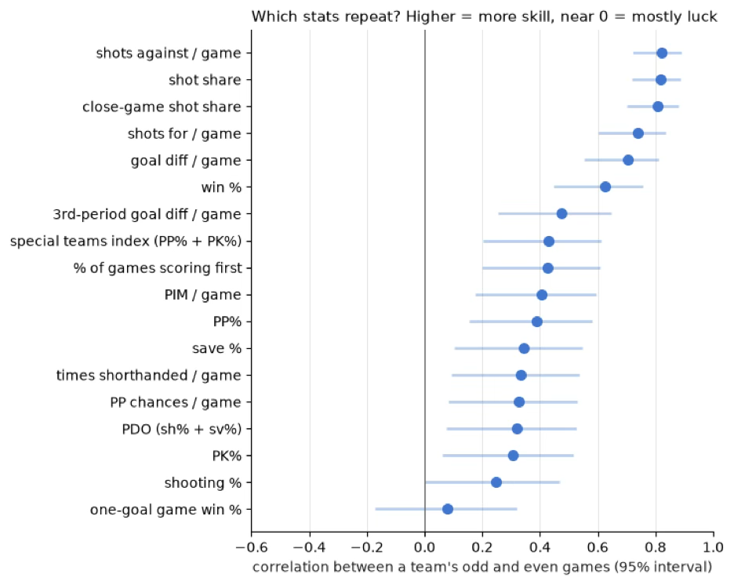
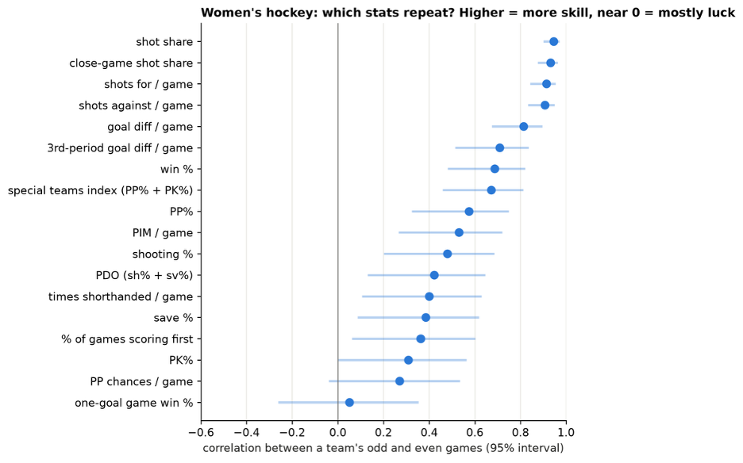
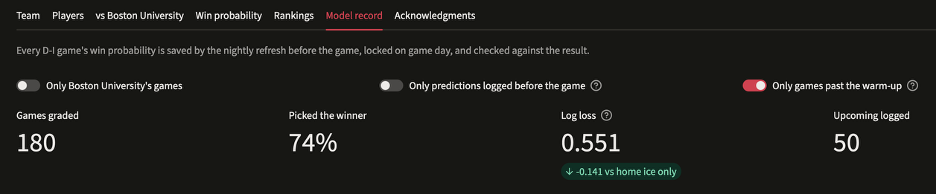
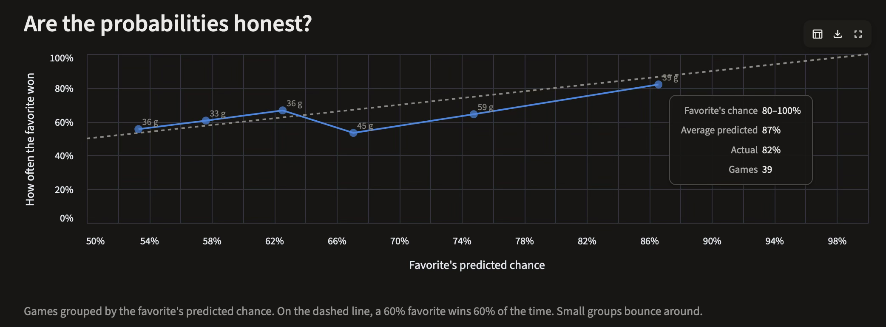
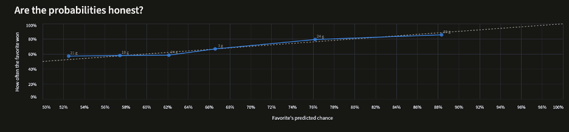
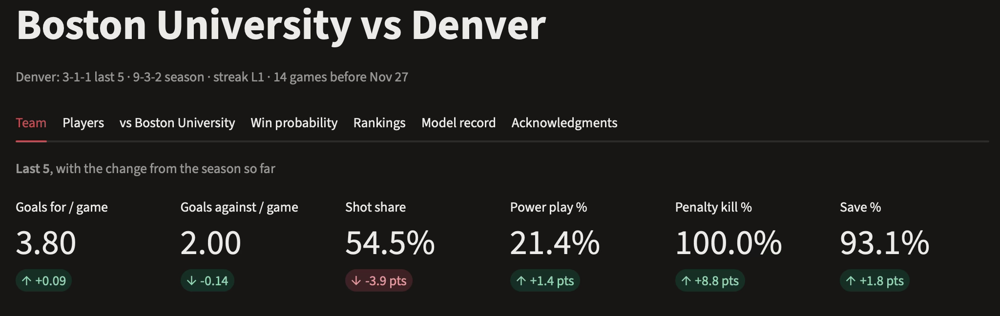
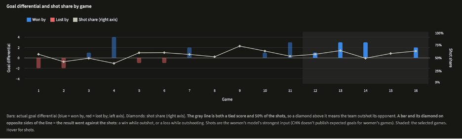
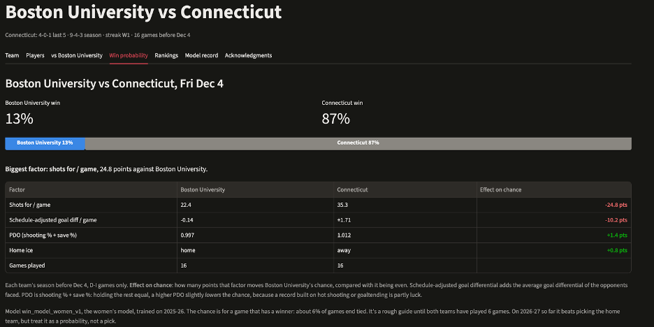

Introduction
College hockey is one of the hardest sports to predict. Rosters turn over every year, there are 62 men's and 45 women's Division I teams, and a single hot goaltender can steal a weekend series. Even the best team in the country loses often enough that a confident "pick" is usually a mistake. That makes it a good problem for a probabilistic model: the useful question is not "who will win?" but "how likely is each team to win, and can those probabilities be trusted?"
CHIRP (College Hockey Intelligence & Reporting Platform) is my answer to that question, for both the men's and women's games. It started as a scouting tool for Boston University's opponents and became a full pipeline: it scrapes every D-I game in both leagues, validates and stores the data in PostgreSQL, serves it through an API, and feeds a win-probability model for each league that logs its predictions before each game and grades itself afterward. The heart of the project is the modeling, but a model is only as good as the data under it, so this write-up starts with the data.
From Web Pages to a Database
No public API offers complete college hockey data, so the first job was collecting it. With the permission of College Hockey News (CHN), I wrote scrapers for two kinds of pages: each team's schedule page and each game's box score. Together they cover goals and shots by period, special teams, every skater and goalie line, every goal and every penalty. Across the 2025-26 season that was 1,148 men's games and 790 women's games, about 72,000 skater lines and 10,800 goals.
Both leagues run through the same code. Everything that differs between them lives in a single configuration file: CHN's page addresses, the data folder, the database, the model, and which statistics CHN publishes for each league (expected goals and skater ice time are recorded only for the men's game). The scrapers are deliberately polite. They check robots.txt before every request, wait two seconds between pages, and save each page so a finished box score is never downloaded twice.
Scraped data is only useful if it is right, so the pipeline treats validation as a gate. For each league, sixteen exact checks compare the data against itself. Period goals must add up to the final score. Every skater's points must equal goals plus assists. Most usefully, the score in each box score must match the score on both teams' schedule pages, which are separate pages and catch both scraping and parsing errors. If anything fails without an explanation, that league's database is not touched and keeps serving its last good data. The checks found nine rows, five in the men's data and four in the women's, where CHN's own pages disagree with each other; each one is documented with a link rather than silently "fixed."

The subtlest data problem was identity. Players change how their names are written ("Joseph" becomes "JJ"), transfer between schools, and appear under two spellings on the same team. I built a stable ID system that links players across seasons, matching them through CHN's own player IDs where possible and through name history when a player's record ends at one school and begins at another: 177 men's and 57 women's transfers are linked that way. Teams need the same care, because programs change divisions. Four women's programs moved up to Division I between the two seasons, so D-I status is stored per season: a game against Franklin Pierce counts as a D-I game in 2026-27, but not in 2025-26, when the program was Division II.
Serving the Data: PostgreSQL and an API
The validated data loads into PostgreSQL, one database per league, as a full refresh in a single transaction. Anyone reading the database sees either the old data or the new data, never half of each. Each database is split into schemas by purpose: hockey holds the games and players and is rebuilt on every load, features holds views that compute per-game team and player rows, and predictions holds the prediction log, which no load is allowed to touch.
On top of the databases sits a FastAPI service with 21 read-only endpoints: teams, games, box scores, players, league leaders, recent form, win probabilities, rankings and the prediction log. Every endpoint serves either league through a single parameter (?league=women). Every connection is read-only and every request needs an API key. The dashboard never queries a database directly; it only talks to the API. That separation kept the modeling code, the data and the interface independent, so I could change one without breaking the others.

Defining the Prediction Problem
The target is the same in both leagues: did the home team win? A few rules make it well defined:
- Ties are excluded. About 6.9% of men's games and 5.9% of women's games end tied (shootouts count as ties), so each model gives the chance of winning a game that has a winner.
- Only D-I vs. D-I games count, because CHN records non-D-I opponents only partly.
- Only complete box scores count. A game is used only if its box score and its goal list both match the official score.
- Neutral sites get no home edge. Two evenly matched teams at a neutral rink are exactly 50/50.
The most important rule is about time. Every feature for a game is computed only from games played before that game's date. It sounds obvious, but it is easy to break: a season average that includes the game being predicted leaks the answer into the input. The feature pipeline enforces the cut-off for every game, and the dashboard uses the same rule when it shows a team "as of" a past date.
Choosing Features Without Fooling Myself
With one full season per league (957 usable men's games and 579 women's games), the real risk was not a bad model but a lucky one: trying enough feature combinations until one happens to fit the noise. To guard against that, I wrote the rules for each step of the analysis before running it, and worked through each league's analysis in its own eight notebooks. The women's analysis started from scratch rather than reusing the men's conclusions, because the two games could reward different things.
Validation used time-ordered cross-validation (TimeSeriesSplit), so a model is always trained on earlier games and tested on later ones, the same way it is used in practice. The last fold, the end of the season including the conference and NCAA tournaments, was held back to confirm the final choice once. Features were added by forward selection, and a feature group was kept only if it improved log loss by a minimum amount in a majority of the folds used for choosing.
The rules were scaled to each league's sample size, and the scaling was fixed before any women's result was seen. With fewer women's games, the minimum fold size forced four folds instead of five, and the minimum gain rose from 0.001 to 0.0013 (scaled by the square root of the sample-size ratio, the way noise scales). The 0.001 itself was added after the men's first run, which kept "percentage of games scoring first" for a gain of 0.0001. That is noise. I applied the threshold to every group, confirmed it changed only that one decision, and documented the change rather than quietly rerunning.
What Actually Predicts a Win
The most useful step was separating skill from luck. I split each team's season into odd- and even-numbered games and asked which statistics repeat. A stat that is mostly skill should look similar in both; a stat that is mostly luck should not. Because both sets span the whole season, the comparison is not distorted by teams improving or fading over time.
- Shot-based stats are skill in both leagues. Close-game shot share (the share of shots in periods that started tied or within one goal) correlated at r = 0.81 between a men's team's odd and even games, and r = 0.93 for women's teams.
- Record in one-goal games is luck in both. It barely repeats.
- Finishing is where the leagues differ. In the men's game, shooting percentage and PDO (shooting % plus save %) are mostly luck (r = 0.25 for shooting %). In the women's game they repeat (r = 0.48 and 0.42): finishing and goaltending talent vary more between women's teams.


That explained a result common to both leagues: season-to-date numbers beat recent form for every statistic. "Last five games" feels like it should matter, but it mostly measures luck.
Forward selection then produced a different model for each league. For the men's, close-game shot share does most of the work, and goal differential (excluding empty-net goals) adds a small but consistent amount on top. For the women's, shots for per game is the strongest predictor, schedule-adjusted goal differential adds to it, and PDO adds a correction. Everything else was tested and rejected in both leagues, including recent form, special teams, save percentage, streaks, rest days and back-to-backs.
The Models
Both models are L2-regularized logistic regressions of the same form:
Home win probability = logistic(team-strength inputs + home ice), each team's season so far, home minus away.
| Men's | Women's | |
|---|---|---|
| Inputs | Close-game shot share, goal differential | Shots for per game, schedule-adjusted goal differential, PDO |
| Weight per standard deviation | 1.97× and 1.24× the odds | 2.75×, 2.27× and 0.71× the odds |
| Evenly matched home team wins | 55.1% | 51.9% |
I chose logistic regression on purpose. With one season of games, a more flexible model would mostly learn noise, and every coefficient here can be read directly. PDO's weight below 1 is the most interesting result of the women's analysis. On its own, a higher PDO goes with winning. But once goal differential is known, a high PDO says that some of that goal differential came from hot shooting or goaltending, which only partly repeats. So the model discounts it and leans on the shots: a luck correction learned from the data.
One design detail matters in both. Neither model has a separate intercept; instead the home edge is multiplied by a home-ice switch that is 1 for a home game and 0 at a neutral site. The inputs are scaled but not centered, so zero still means "evenly matched." That gives neutral-site games exactly 50/50 by construction, and it lets every team receive a single neutral-ice rating, which powers the rankings.
Testing It Honestly
After each league's analysis, I froze the model: its coefficients are saved in a version-controlled model card, and the live code is tested to reproduce the frozen model exactly, to within floating-point rounding, on every test game. Then each model was tested on 2026-27 games it had never seen.
| Men's | Women's | |
|---|---|---|
| Held-back end of 2025-26 | Log loss 0.627 (win % only 0.639, home rate 0.675) | Log loss 0.541 (win % only 0.567, home rate 0.683) |
| 2026-27, never seen before | 248 games: 64% of winners, log loss 0.653 vs 0.683 for home ice alone | 180 games: 74% of winners, log loss 0.551 vs 0.692 for home ice alone |


The women's figures count only games where both teams had played at least six (the site's threshold for that model), the men's at least three.
The two leagues differ in an important way. Women's games are far more predictable, because the gaps between women's D-I teams are wider: in one game in three, a team takes over 60% of the shots. The women's model ranks games much better (AUC 0.75–0.78, against 0.64–0.67 for the men's).
But the same strength creates the women's model's weakness. With only three to five games of history, a women's team's shot totals are extreme, and the model turns them into overconfident probabilities: in those games its log loss is worse than simply picking the home team. From six games on it is strong. So the site labels women's predictions a rough guide until both teams have six games, against three for the men's. Both models are weakest in a season's first weeks, and neither is "settled" after a few hundred games. Each needs the rest of the season to prove itself.
Are the Probabilities Honest?
A win probability is only useful if it means what it says. When a model calls a team a 70% favorite, that team should win about 70% of the time. To check this, the platform keeps a prediction log for each league. Every night it records each upcoming game's probability, updates it until game day, and then locks it. After the game, the result is attached. Because predictions are written before the games happen, the record cannot be quietly improved after the fact.
The Model record page groups logged games by the favorite's predicted chance and plots how often those favorites actually won. Points on the diagonal mean honest probabilities.


So far both models are well calibrated in the middle range and lean overconfident with their strongest favorites. Men's favorites in the 65–80% range have won somewhat less often than predicted; women's favorites at about 88% have won about 78%. Each group holds only a few dozen games, though, where luck alone moves a point by several percentage points. I am watching rather than correcting: recalibrating on a few dozen games would be its own form of overfitting.
Putting It to Work: The Dashboard
The models and data come together in a Streamlit dashboard. The sidebar starts with the league, Men or Women, and sets the context for every page: your team (Boston University by default), the team to scout (its next opponent by default), an "only games before" date for seeing a team as it looked at any point in the season, and how many recent games to examine.
- Team: the scouted team over its last N games beside its season so far, across 20 statistics colored better or worse, plus goal differential by game set against what the play said: expected goals for the men's game, and shot share for the women's game, where CHN does not publish expected goals. This is the starting point for a scouting report.
- Players: skater and goalie lines over the same games, with season numbers alongside and the likely starting goalie. Use it to find who is driving a team's recent results.
- vs. your team: both teams side by side on every stat, plus this season's meetings. This is the matchup page.
- Win probability: your team's chance against the scouted opponent, or any two teams at a venue you choose, with a breakdown of what drives the number using that league's model.
- Rankings: a model "poll" that ranks teams by their chance to beat an average team on neutral ice, with movement since last week. It is a useful counterweight to records built against weak schedules.
- Model record: each league's prediction log, accuracy, log loss and calibration chart, so visitors can judge the models for themselves.


Men's Team tab: Denver's last 5 vs its season, and goal differential against expected goals

Women's Team tab: goal differential and shot share by game

Men's Win probability: BU vs Denver, with what drives the number

Women's Win probability: BU vs Connecticut, with what drives the number
Running Itself
The final piece was making the platform maintain itself at no cost. Every morning a GitHub Actions job runs the full pipeline (scrape, validate, load, predict, back up) for each league against a temporary database, and commits the results to a private data repository. The data stays private there, as the data-use terms require. Each league is saved on its own terms: if one league's validation fails, only that league keeps its last good data, and the other still updates. The public app on Streamlit Community Cloud downloads both leagues with a read-only token, starts its own private databases and API inside the app, and refreshes itself within minutes of each nightly run. Scheduled browser visits keep the free app from sleeping.
Conclusion
CHIRP showed me that most of the work in an applied machine learning project happens before the model: collecting data politely, validating it until it can be trusted, and giving it a stable structure. The modeling lesson was restraint. With one season of data per league, the most valuable decisions were the features I rejected, the rules I set before looking at results, and the decision to freeze each model and let it be judged on games it had never seen.
Running the same method on two leagues taught a second lesson: a good method should not produce the same answer everywhere. The men's and women's games share a foundation (shots and goal differential), but the women's game rewards finishing in a way the men's does not, and the data found that without being told to look for it.
The next step is v2 for each league, planned for the 2027-28 season. It will carry each team's rating over from the previous season and let it fade as new games are played, which should fix both models' weakest stretch: the first few weeks of a season, before teams have built up any history. Until then, both v1 models stay frozen and keep logging their predictions, so each v2 will have an honest record to beat.
Full project available on GitHub. Live at chirp-hockey.streamlit.app.